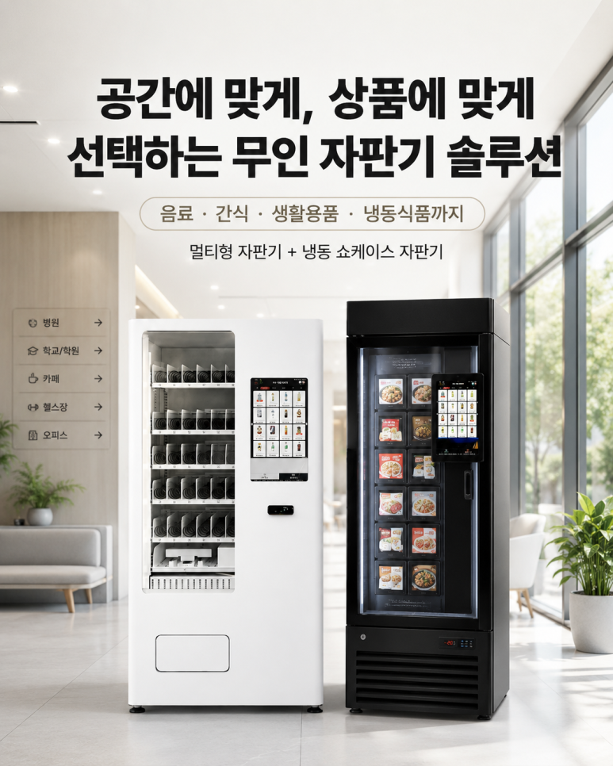
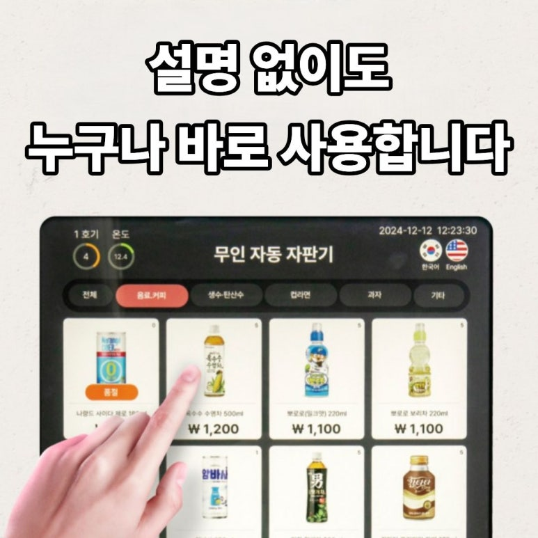
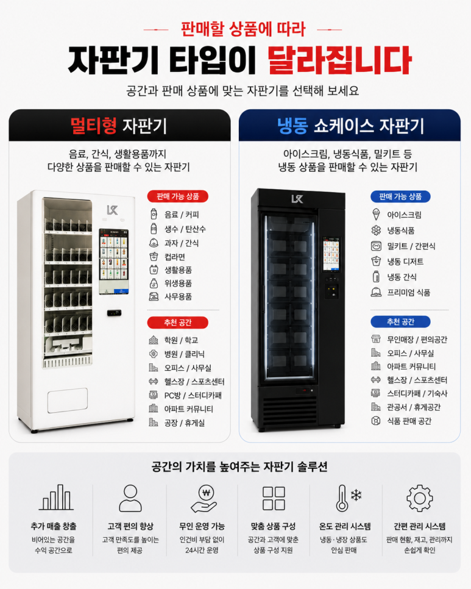
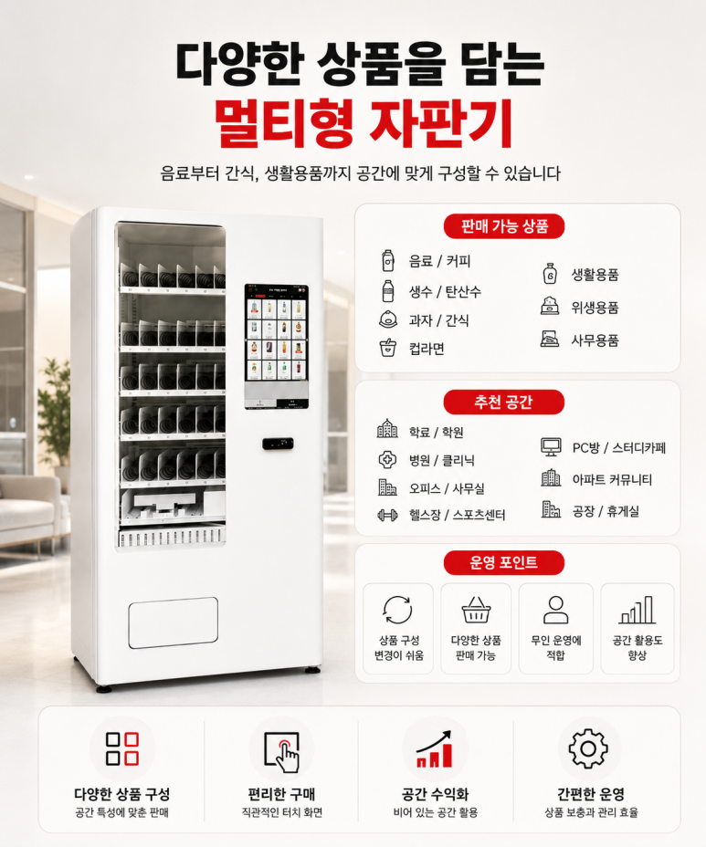
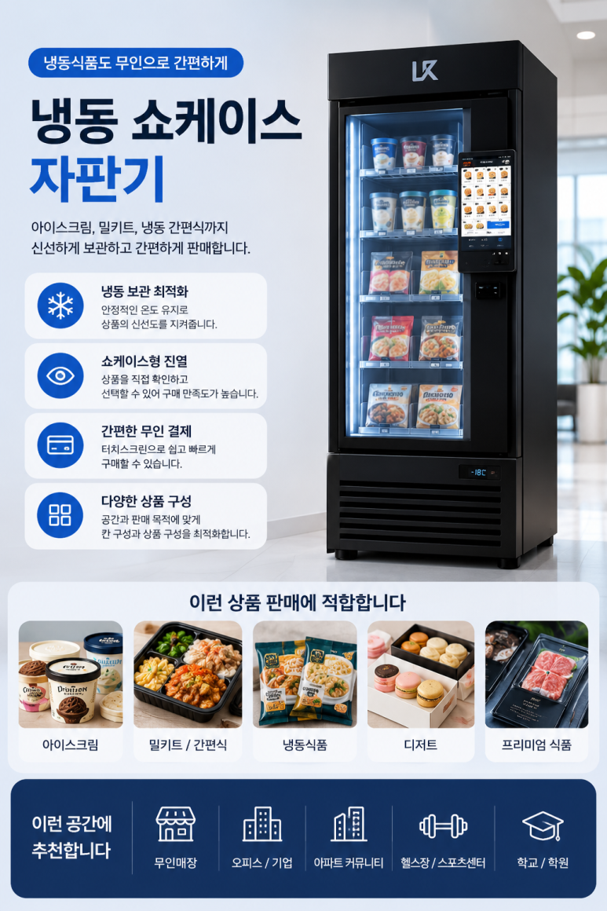
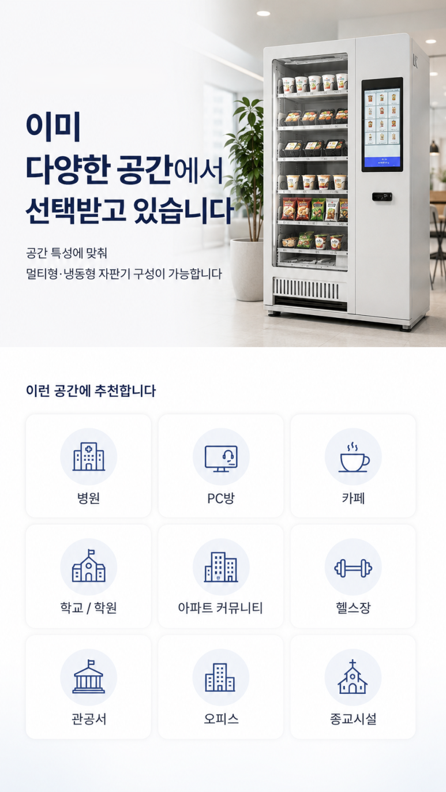
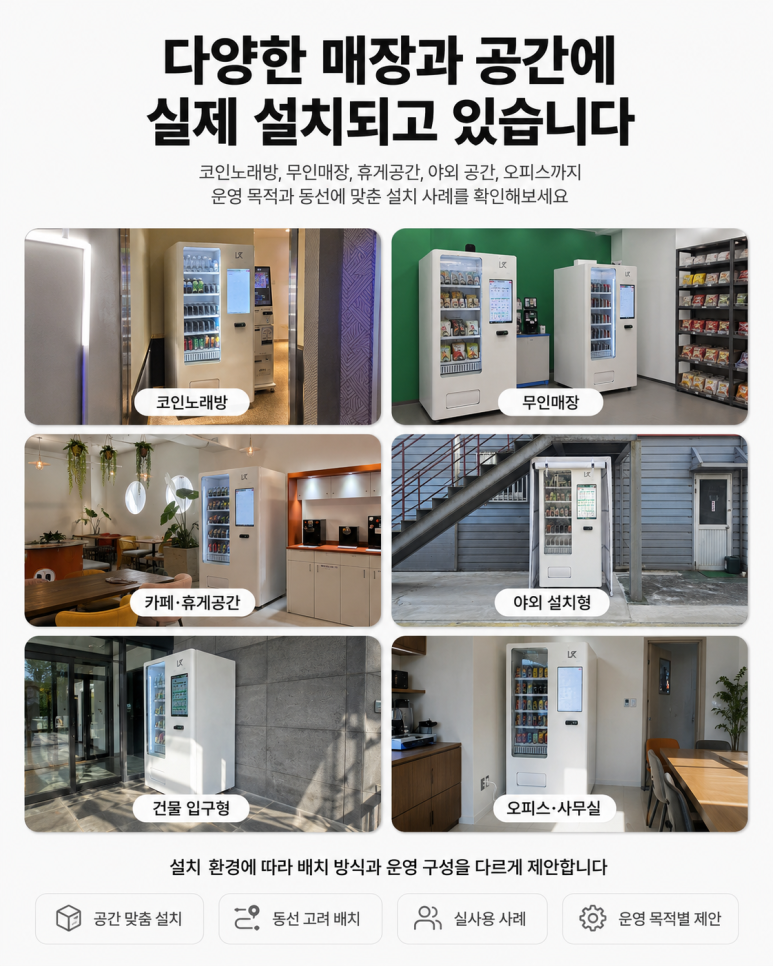
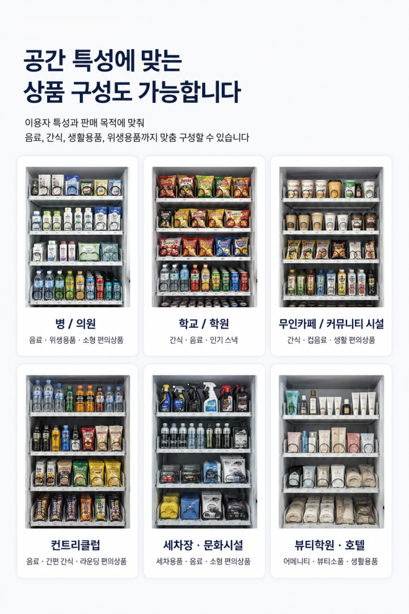
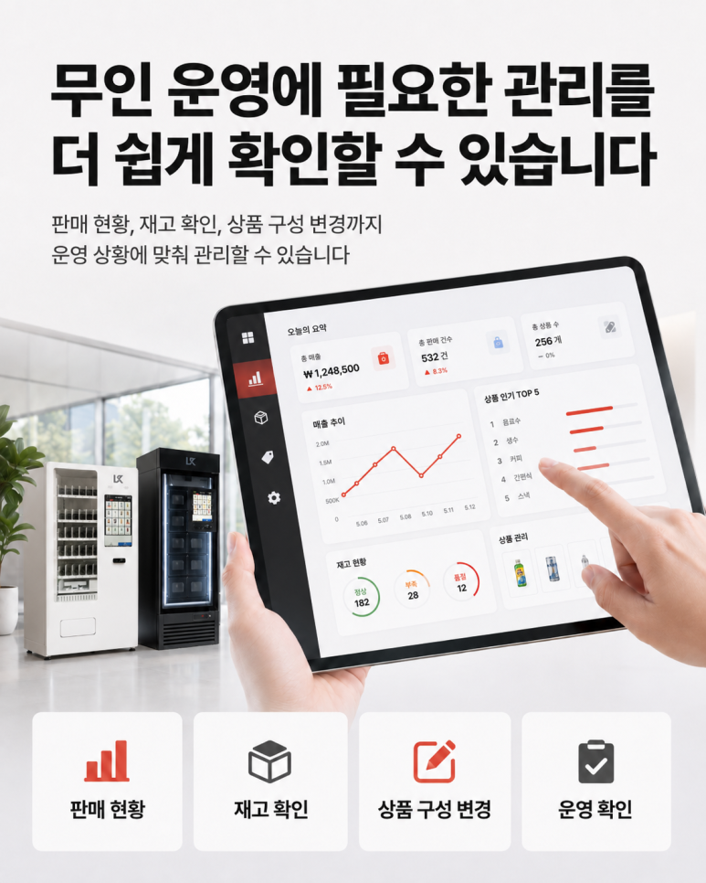

무인카페·무인 아이스크림 매장 창업 준비 방법 — 냉동자판기 완전정리

요즘 무인창업 상담 중에 부쩍 늘어난 게 무인카페와 무인 아이스크림 매장입니다. 인건비 없이 24시간 돌아가고, 냉동·냉장만 잘 잡으면 관리도 단순하기 때문입니다. 그 핵심 장비가 바로 냉동자판기예요. 아이스크림부터 밀키트·냉동식품까지 한 대로 파는 기계라, 무인 아이스크림 자판기 하나로 작은 무인점포를 차릴 수 있습니다. 아래에서 냉동자판기 종류와 고르는 법, 창업 준비 순서를 사진과 함께 하나씩 정리해 드리겠습니다.
1. 냉동자판기란? — 무인 아이스크림 매장의 핵심 장비
냉동자판기는 영하로 온도를 유지하며 아이스크림·냉동식품·밀키트를 무인으로 파는 자동판매기입니다. 콘·바·하드 아이스크림 자판기부터, 냉동만두·냉동피자 같은 냉동식품 자판기, 반찬·국·밀키트 자판기까지 품목이 다양합니다. 직원 없이 셀프로 고르고 카드로 결제하는 구조라, 무인 아이스크림 할인점·무인 아이스크림 점포의 기본이 됩니다.

2. 아이스크림 자판기 — 무인 아이스크림 창업의 스테디셀러
무인 아이스크림 자판기는 초기 무인창업에서 가장 많이 찾는 아이템입니다. 콘·바·하드·컵 아이스크림을 슬롯에 채워 두면, 손님이 골라 카드로 결제하고 가져갑니다. 관리가 단순하고 동네 상권이면 꾸준해서, 무인 아이스크림 할인점 형태로 많이들 시작합니다. 유통기한이 길고 재고 관리가 쉬운 편이라 첫 창업자에게 부담이 적습니다.

3. 무인카페 — 냉동·냉장 자판기로 카페 상권 노리기
무인카페는 커피·음료 자판기에 냉동 디저트 자판기를 더해 구성합니다. 아이스크림·프라페·냉동 케이크·젤라또까지 한 자리에서 팔면, 좁은 공간에서도 객단가를 올릴 수 있습니다. 24시간 무인으로 돌아가니 심야·새벽 매출도 잡히고, 오피스·학원가·역세권처럼 사람이 오래 머무는 상권에서 특히 잘 맞습니다.

4. 밀키트·냉동식품 자판기 — 요즘 뜨는 무인 아이템
아이스크림 다음으로 문의가 많은 게 밀키트 자판기·냉동식품 자판기입니다. 반찬·국·밀키트·냉동만두·냉동피자 등을 무인으로 팝니다. 아파트 단지·주택가처럼 퇴근길 저녁 수요가 있는 곳에서 회전이 빠릅니다. 아이스크림 자판기와 냉동식품 자판기를 한 매장에 함께 두면 여름·겨울 계절을 서로 보완해 매출이 고르게 나옵니다.

5. 멀티·복합 냉동자판기 — 좁은 자리에서 여러 품목을
자리가 좁다면 멀티(복합) 냉동자판기가 답입니다. 아이스크림·냉동·음료·스낵을 한 대에 담아, 한 평 남짓한 공간에서도 여러 품목을 동시에 팔 수 있습니다. 셀프 결제 키오스크가 붙은 셀프 아이스크림·멀티키오스크 형태로, 관리 포인트를 한 대로 모을 수 있어 무인 운영이 편합니다. 제조사·브랜드도 롯데자판기(롯데 자판기)를 비롯해 여러 곳이 있으니, A/S와 부품 수급이 잘 되는 모델로 고르는 게 중요합니다. 어떤 브랜드가 내 자리·품목에 맞는지 함께 비교해 드립니다.

6. 결제 — 카드·간편결제 무인 세팅
무인 매장은 결제가 막히면 그대로 손님을 놓칩니다. 그래서 냉동자판기에는 카드·삼성페이·카카오페이·네이버페이·QR을 한 번에 받는 무인 결제를 세팅합니다. 잔돈·현금함이 없어 정산도 간단하고, 매출은 앱으로 실시간 확인됩니다. H포스는 기계 반입부터 전기·통신 연결, 결제 연동까지 설치비 무료로 진행합니다.

7. 입지 — 무인 아이스크림 매장은 자리가 8할
냉동자판기도 결국 자리가 매출을 정합니다. 사람이 꾸준히 지나가고, 멈춰 설 공간이 있고, 밤에도 밝은 곳이 좋습니다. 학교·학원가, 아파트 단지, 지하철역·역세권, 오피스, 헬스장·스터디카페처럼 유동 인구가 오래 머무는 곳이 회전이 빠릅니다. 무인 아이스크림 매장은 특히 아이·학생 동선과 주거 상권에서 잘 됩니다.

8. 구매 · 임대 · 렌탈, 그리고 준비 순서
냉동자판기는 구매·임대·렌탈 세 방식으로 들일 수 있습니다. 목돈 있고 길게 갈 거면 냉동자판기 구매, 목돈 없이 내 것으로 만들고 싶으면 임대, 리스크를 줄여 가볍게 시작하려면 렌탈입니다. 처음이라면 한 대를 렌탈·임대로 시작해 자리를 검증한 뒤 늘리는 걸 권합니다.
준비 순서는 간단합니다. ① 아이템·자리 정하기 → ② 구매/임대/렌탈 방식 정하기 → ③ 설치·결제 연동 → ④ 운영·재고 관리. 자리 분석과 아이템 추천은 무료로 함께 봐 드립니다.

무인카페·무인 아이스크림 매장 창업, 여기서 시작하세요
냉동자판기·아이스크림 자판기·밀키트 자판기 구매·임대·렌탈 상담부터 자리 분석, 아이템 추천, 설치비용과 예상 수익까지 무료로 안내해 드립니다. 무인 아이스크림 매장·무인카페 창업을 준비 중이시라면 편하게 전화 주세요. 전국 어디든 방문합니다.
📞 무인 아이스크림 매장 창업 상담 010-6832-1994